Locații de nuntă în București
- locații în director
- 51
- cu cazare în registrul SITUR
- 8
- medie ponderată Google
- 4,6 / 5
- evaluări Google
- 69.951
Cum alegi unde mergi la vizionare
Selecția capitalei urmează adresa fiecărei proprietăți. O căutare care începe în nordul orașului poate continua spre Pipera și Voluntari, iar pentru pădure sau mal de lac puteți extinde aria până la Ciolpani și Snagov. Lista comună cu Ilfov permite această comparație fără să dubleze locațiile.
Pentru o nuntă în oraș puteți începe cu un cocktail de terasă, precum cel documentat la La Teatru. La Călinescu. Un alt scenariu este ceremonia lângă salonul hotelului, ca la Atlas Ballroom. Decideți dacă vreți exclusiv să primiți invitații afară sau să țineți afară și jurămintele. Veți cere astfel aceeași configurație atunci când comparați un restaurant bucureștean cu o grădină din Ilfov.
Două adrese pentru o zi de vizionări
Pe hartă, între aceste două proprietăți sunt 4,0 km în linie dreaptă. Deschide indicațiile de drum din fișe ca să vezi traseul pe șosea înainte de a stabili a doua întâlnire.
- ZEUS Essence Bucharest Opera · Strada Ion Brezoianu 37, 010132 București
- Zexe Evenimente · Strada Oltețului 30, 023818 București
Spații exterioare menționate de operatori
- American Ballroom · Nuntă sub cort cu acces la terasă
- Events by Tonyo · Cununie civilă sau religioasă în aer liber
- Grand Hotel Bucharest · Petrecere privată pe terasă
Explorează București și Ilfov împreună · 120 de locații
Toate locațiile din București
Ordinea ține cont de nota Google și de numărul evaluărilor. Cum calculăm ordinea
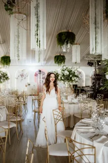
Fotografie a locației · Sursa fotografiei București · Local pentru evenimente
Reina Events North
Reina Events North, București. Pentru o vizionare, merită să precizezi denumirea The Tent, fiindcă în aceeași grădină apare și The White Mansion.
Șoseaua București-Ploiești 155, 013681 București+40 720 769 894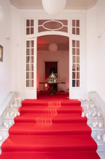
Fotografie a locației · Sursa fotografiei București · Centru de evenimente
the villa. Event House Casa Dimitrie Bolintineanu
the villa. Event House Casa Dimitrie Bolintineanu. Plaja largă de invitați pe care o amintește nu spune însă câți pot lua masa în grădină.
Strada Negustori 16, 010528 București+40 738 833 388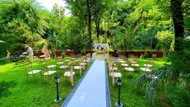
Fotografie a locației · Sursa fotografiei București · Local pentru evenimente
Baroque Events & Garden
Grădină de evenimente pe Calea Rahovei, notată 4,9 din 362 de evaluări; mirii laudă mâncarea, rața în sos porto și comunicarea cu gazdele.
Calea Rahovei 145, 050891 București+40 726 350 802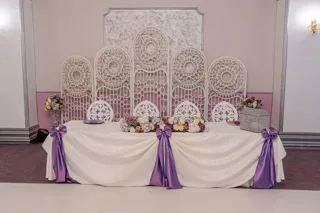
Fotografie a locației · Sursa fotografiei București · Sală de nunți
Events by Tonyo
Sală de nunți în București cu meniu Silver de la 71 EUR și cununii în aer liber; laude pentru mâncare, atenție la detaliile din contract.
Aleea Hobița Nr 1, 021821 București+40 723 170 007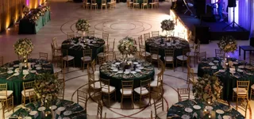
Fotografie a locației · Sursa fotografiei București · Local pentru evenimente
Terra events hall
Terra events hall, București. Un cuplu a ales Terra Events pentru nuntă și pentru botezul fiului în aceeași zi de octombrie.
Bulevardul Lacul Tei 1 bis, 020371 București+40 733 503 500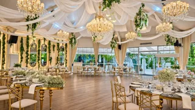
Fotografie a locației · Sursa fotografiei București · Sală de nunți
Reina Events
Reina Events. Un cuplu povestește despre propria nuntă de la sfârșit de mai în Salonul Sofia și despre discuțiile cu echipa încă de la prima întâlnire.
Strada Locotenent Nicolae Pascu 81, 077160 București+40 724 415 433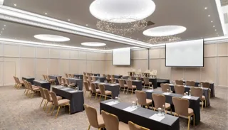
Fotografie a locației · Sursa fotografiei București · Hotel
InterContinental AthéNéE Palace Bucharest by IHG
InterContinental AthéNéE Palace Bucharest by IHG. Un oaspete la Athénée Palace descrie camere spațioase și timpul petrecut la spa în timpul șederii.
Strada Episcopiei 1-3, 010292 București+40 21 303 3777
Fotografie a locației · Sursa fotografiei București · Local pentru evenimente
Amalfi Alegria
O familie care a organizat un botez la Amalfi Alegria a putut alege, printre altele, un meniu fără lactate și unul pescetarian.
Bd Tudor Vladimirescu 22 Cladirea Green Gate, parter, 050883 București+40 722 163 270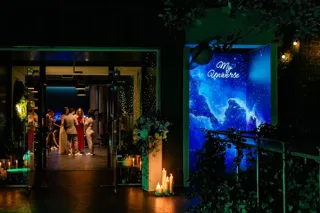
Fotografie a locației · Sursa fotografiei București · Local pentru evenimente
Spatiul VERSATIL
Spatiul VERSATIL, București. La un botez de la Spațiul Versatil, familia a ales meniul cu Ana și a adus o parte din obiectele de papetărie.
Bulevardul Basarabia 256, 030352 București+40 771 158 274
Fotografie a locației · Sursa fotografiei București · Local pentru evenimente
Mellow Garden
Mellow Garden, București. La vizită, alegeți o masă de unde un părinte ar vedea locul de joacă dorit și încercați traseul până acolo.
Strada Puiandrului 106, 023175 București+40 730 176 168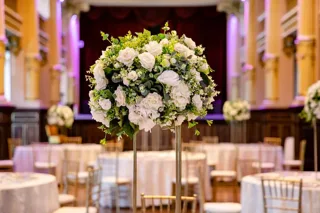
Fotografie a locației · Sursa fotografiei București · Reper istoric
Palatul Bragadiru
Palatul Bragadiru, București. Pentru o ceremonie mai intimă, cereți calendarul celorlalte manifestări din ziua voastră.
Calea Rahovei 147-153, 050892 București+40 771 463 688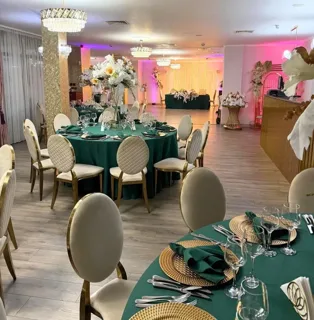
Fotografie a locației · Sursa fotografiei București · Local pentru evenimente
RESTAURANT FLOREAL
RESTAURANT FLOREAL, București. Este un exemplu de folosire a restaurantului din București în momente cu ritmuri diferite.
Șoseaua Giurgiului 90, 040654 București+40 769 728 237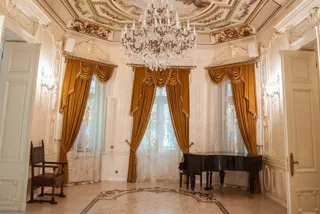
Fotografie a locației · Sursa fotografiei București · Atracție turistică
Palatul Noblesse
Cei 600 de metri pătrați ai grădinii de la Palatul Noblesse devin ușor de înțeles pe un plan în care sunt desenate și aleile, și mobilierul.
Strada Sfinților 7, 030167 București+40 749 232 311
Fotografie a locației · Sursa fotografiei București · Sală de nunți
Iris Ballroom
La un botez organizat la Iris Ballroom, familia a discutat pregătirile cu Mihaela, iar în timpul evenimentului s-a bazat pe Sebastian ca șef de sală.
Bulevardul Poligrafiei 1B, 013704 București+40 755 746 191
Fotografie a locației · Sursa fotografiei București · Cazare
Pensiunea Casa verde Bucuresti
Pensiunea Casa verde Bucuresti, București. Un oaspete descrie la Casa Verde camere cu aspect de cabană și amplasarea în pădure.
Aleea Teișani 70, 014034 București+40 730 616 544
Fotografie a locației · Sursa fotografiei București · Local pentru evenimente
Event Room - Locație pentru evenimente
Local intim pe Strada Sub Tei din București, cu salon de 40 de locuri; aici s-au ținut cununii de 36 de persoane, botezuri și majorate.
Strada Sub Tei, 023672 București+40 724 614 723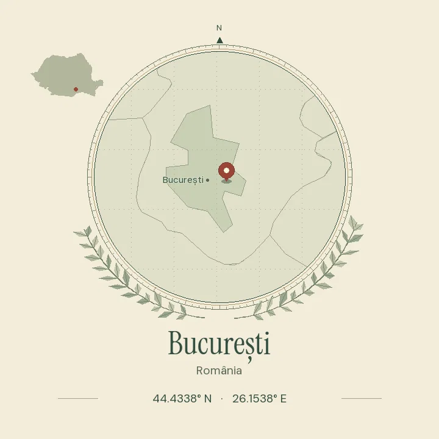
Hartă ilustrată București · Local pentru evenimente
Emporium Events
Local de evenimente pe Bulevardul Basarabia din București, cu nunți și botezuri lăudate pentru mâncare. Sala e descrisă ca mică; întreabă capacitatea.
Bulevardul Basarabia 37-39, 022103 București+40 772 145 568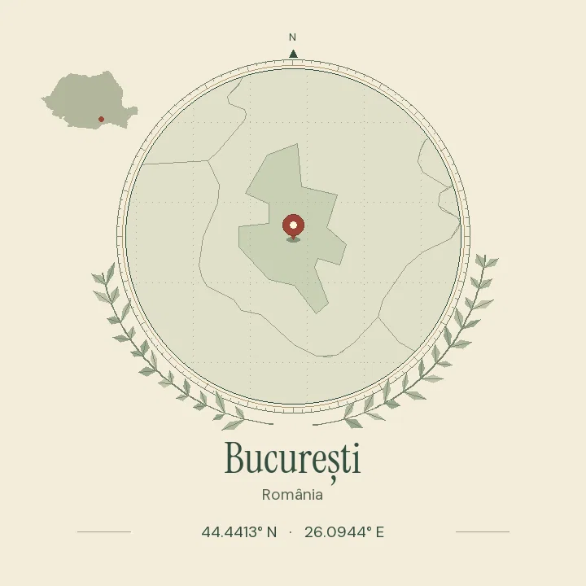
Hartă ilustrată București · Hotel
Radisson Blu Hotel, Bucharest
Radisson Blu Hotel, Bucharest, București. Cereți să vedeți exact ușa dintre cele două spații și unde ar începe intrarea mirilor.
Calea Victoriei 63-81, 010065 București+40 21 311 9000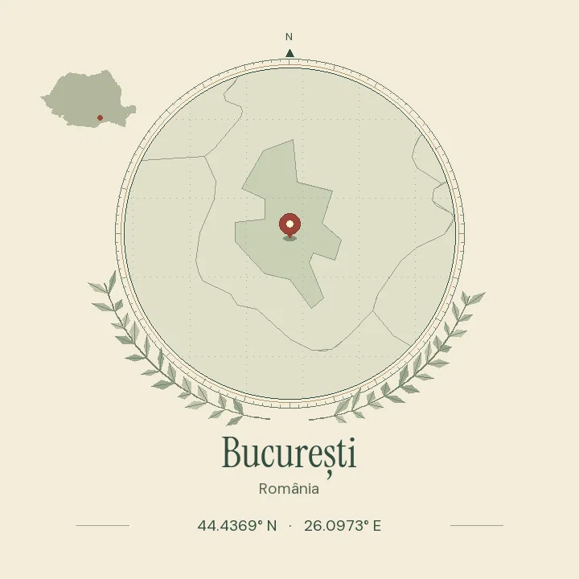
Hartă ilustrată București · Hotel
Novotel Bucharest City Centre
Novotel Bucharest City Centre, București. Terasa pe care Novotel o prezintă pentru petreceri are vedere spre Calea Victoriei.
Calea Victoriei 37B, 030167 București+40 21 308 8500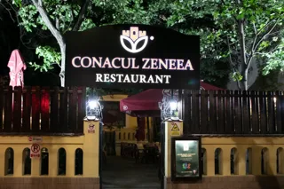
Fotografie a locației · Sursa fotografiei București · Restaurant cu specific românesc
Conacul Zeneea
Restaurant românesc pe Pache Protopopescu, cu terasă și loc de joacă la mansardă; 4,6 din 2.232 de evaluări, dar fără parcare proprie.
Bulevardul Pache Protopopescu 38, 030167 București+40 739 250 899
Fotografie a locației · Sursa fotografiei București · Local pentru evenimente
Le Château
Dacă vă place acest decor, mergeți prin sală cu fotograful și priviți de unde ar putea surprinde intrarea grupului sau primul dans, cu acordul locației.
Strada Turturelelor 11, 030881 București+40 725 333 333
Fotografie a locației · Sursa fotografiei București · Local pentru evenimente
Pentagon Events
Pentagon Events, București. Pentru cuplul care are deja fotograf sau cofetar, acesta este un bun punct de pornire.
Bulevardul Expoziției, Intrare C, 012101 București+40 771 251 554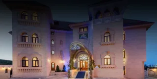
Fotografie a locației · Sursa fotografiei București · Hotel
Palatul Suter
Palatul Suter. Oaspetele care a sărbătorit aici o aniversare descrie treptele de la intrare și terasa camerei primite, amenajată cu o măsuță și două scaune.
Aleea Suter 23-25, 040547 București+40 739 675 782
Fotografie a locației · Sursa fotografiei București · Local pentru evenimente
Daimon Events
Patru saloane cu piscină sau terasă proprie pe Calea Piscului, București; o petrecere de 47 de persoane în salonul Bistro. Ce să întrebi la vizionare.
Calea Piscului 10, 040354 București+40 749 260 359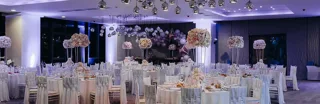
Fotografie a locației · Sursa fotografiei București · Local pentru evenimente
BigBallroom
Salon de evenimente pe Șoseaua Olteniței: botez cu circa 70 de adulți și formație de nouă persoane, terasă de 50 m², nota 4,6 din 447 de evaluări.
Șoseaua Olteniței 87-99, 041303 București+40 723 666 937Fotografie a locației · Sursa fotografiei București · Sală de nunți
Zocalo Ballroom
Zocalo Ballroom. La Zocalo, o familie a organizat nunta și botezul primului copil în aceeași zi de mai, după ce alesese locul pe baza impresiilor citite online.
Strada Chilia Veche 2, București+40 732 962 256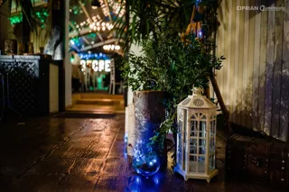
Fotografie a locației · Sursa fotografiei București · Local pentru evenimente
Secret Garden Events
Secret Garden Events, București. Dacă vă atrage ideea de a lua masa printre plante, cereți să vedeți chiar acest spațiu pregătit de cină.
Calea Rahovei 147, 026432 București+40 748 191 698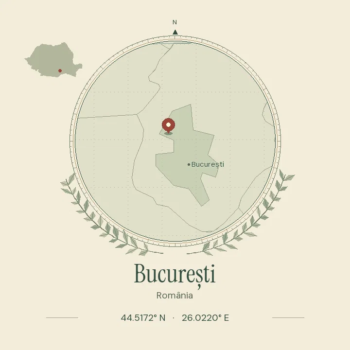
Hartă ilustrată București · Ceainărie
Explore la Conac
La Explore la Conac, un părinte care a organizat aniversarea fiicei sale amintește încăperi rezervate activităților creative.
Strada Nadeș 5, 075100 București+40 722 110 221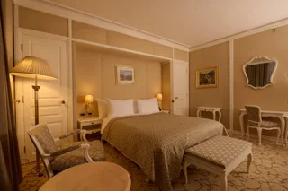
Fotografie a locației · Sursa fotografiei București · Hotel
Grand Hotel Bucharest
Hotel central pe Bulevardul Nicolae Bălcescu, cu piscină la etajul 22 și terasă pentru petreceri private. Capacitate nepublicată; recenzii despre uzură.
Bulevardul Nicolae Bălcescu 4, 010051 București+40 21 310 2020
Fotografie a locației · Sursa fotografiei București · Hotel
Hotel Ambiance
Hotel Ambiance, București. Pentru invitațiile la Ambiance, reperul verificabil este adresa de pe Splaiul Independenței, la numărul 303.
060042, Splaiul Independenței 303, București+40 729 802 998
Fotografie a locației · Sursa fotografiei București · Local pentru evenimente
Empire Events
Empire Events. La Empire, un mire descrie cum persoana de contact a urmărit programul pe durata nunții și a ajutat cu servicii suplimentare.
Strada Popa Lazăr 5-25, 077085 București+40 727 745 589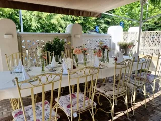
Fotografie a locației · Sursa fotografiei București · Local pentru evenimente
Zexe Evenimente
Zexe Evenimente. Pentru fotografii la o ceremonie restrânsă, merită să vedeți ce intră în cadru atunci când fotograful privește dinspre mese spre apă.
Strada Oltețului 30, 023818 București+40 728 219 452
Fotografie a locației · Sursa fotografiei București · Hotel
Cazare centru - Motor House
Pensiune simplă în casă veche din București, lângă Bulevardul Unirii. Cazare ieftină pentru invitați, cu reclamații serioase de verificat.
Strada Maximilian Popper nr 53, 030861 București+40 722 512 299
Fotografie a locației · Sursa fotografiei București · Local pentru evenimente
La Teatru. La Călinescu
La Teatru. La Călinescu. Un părinte care organizase deja mai multe botezuri povestește că aici a ales să unească nunta cu botezul într-o singură zi de august.
Şoseaua Pavel D. Kiseleff 32, 014192 București+40 761 132 597
Fotografie a locației · Sursa fotografiei București · Local pentru evenimente
Scala Events
Scala Events. În schimb, curtea i s-a părut mică pentru momentele când invitații ies din sală, iar accesul la parcare prin barieră i-a ridicat dificultăți.
012015, Bulevardul Mircea Eliade 16, București+40 740 250 360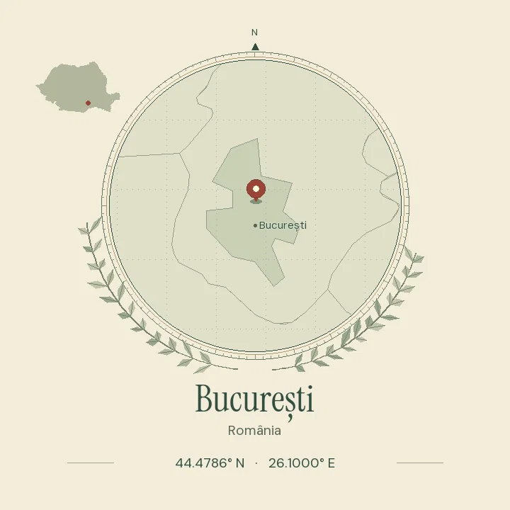
Hartă ilustrată București · Loc de joacă pentru copii
Castelul Magic | MagicCastle | Petreceri Copii și Evenimente
O familie care a sărbătorit aici ziua fiului spune că Florin s-a ocupat de organizare și că cei mici s-au jucat pe durata petrecerii.
Strada Țărmului 19, 077190 București+40 724 045 665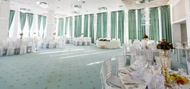
Fotografie a locației · Sursa fotografiei București · Sală de nunți
American Ballroom
Cort de nuntă pentru 200 de invitați pe Bd. Basarabia, cu terasă și șezlonguri. Media 4,4 din 723 de evaluări și ce spun mirii.
Faur, Bulevardul Basarabia 256, 030352 București+40 756 116 009
Fotografie a locației · Sursa fotografiei București · Sală de nunți
Aristocrat Events Hall
Aristocrat Events Hall din București are pajiște pentru cununie, Salon London și pavilion de evenimente. Compară capacitățile și meniurile publicate fără TVA.
Șoseaua Pipera 48, 020112 București+40 733 880 756
Fotografie a locației · Sursa fotografiei București · Vilă
Conacul Coroanei - Luxury Boutique - 5 stars
Oaspeții care au venit la Conacul Coroanei să sărbătorească aniversarea nunții spun că își formaseră așteptările despre întâmpinare citind experiențele altora.
Strada Olari 10, 024057 București+40 729 063 999
Fotografie a locației · Sursa fotografiei București · Bed & Breakfast
Pension La Noblesse
Pension La Noblesse, București. Un vizitator de la La Noblesse descrie o baie înghesuită și spune că nu avea fierbător în cameră.
Strada Someșu Rece 49, 013791 București+40 21 269 2225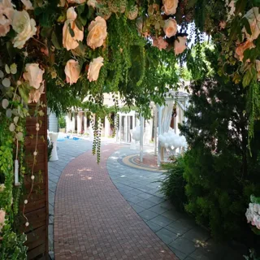
Fotografie a locației · Sursa fotografiei București · Local pentru evenimente
Ballroom Park
Salon cu grădină, piscină și foișor pe Bulevardul Basarabia, cu ceremonie în aer liber pentru 60–70 de invitați. Ce spun recenziile despre DJ și mâncare.
Bulevardul Basarabia 37-39, 022114 București+40 741 210 221
Hartă ilustrată București · Bed & Breakfast
Casa Mică
Casa Mică. La o aniversare de familie din august, organizatorul menționează aproximativ zece copii care s-au jucat în curte și au avut acces la piscină.
Strada General Petre Popovăț 76, 060413 București+40 773 749 477
Fotografie a locației · Sursa fotografiei București · Local pentru evenimente
Signature Events
Signature Events. Numele salonului este util când ceri o schiță: întreabă unde ar fi instalate dulciurile și barul dacă hotărăști să folosești și grădina.
Strada Popa Lazăr 5-25, 021586 București+40 751 103 220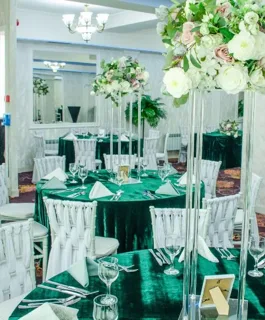
Fotografie a locației · Sursa fotografiei București · Local pentru evenimente
Aubert
Cele patru saloane Aubert din București au între 40 și 200 de locuri. Compară Cristal, Balada, Primavera și Baroc și vezi preparatele din meniurile de nuntă.
Strada Gârniţei, 077160 București+40 729 100 467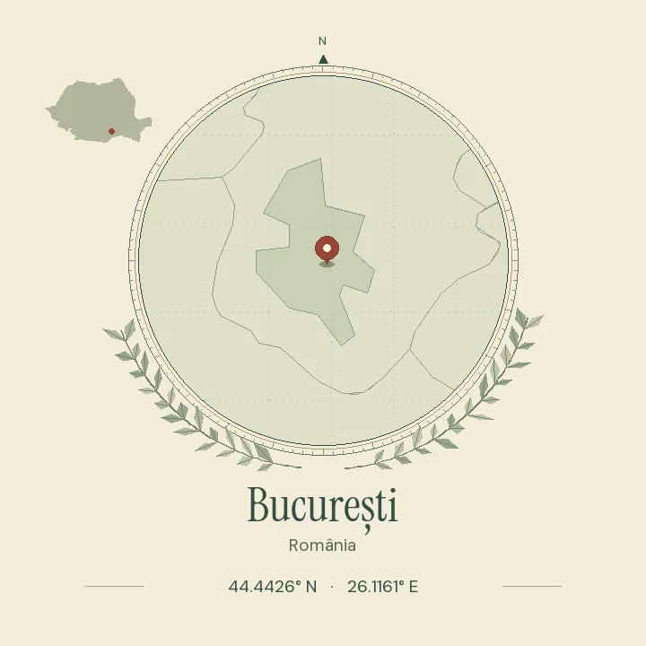
Hartă ilustrată București · Bed & Breakfast
B&B Duo Caffe Mosilor - Cazare Mosilor, Obor | Pensiune, Cazare Ieftina Sector 2
La Duo Caffe Moșilor, un vizitator a stat în camera tematică Londra și spune că la acel sejur nu se servea mic dejun.
Nr. 16, Strada Oltarului Strada, 020674 București+40 766 846 454
Hartă ilustrată București · Grădină
Gloria Garden
Local cu grădină pe Aleea Stănila, București, ales pentru botezuri de 40 de persoane și aniversări. Ce să întrebi înainte de o nuntă.
Aleea Stănila 2, București+40 745 151 349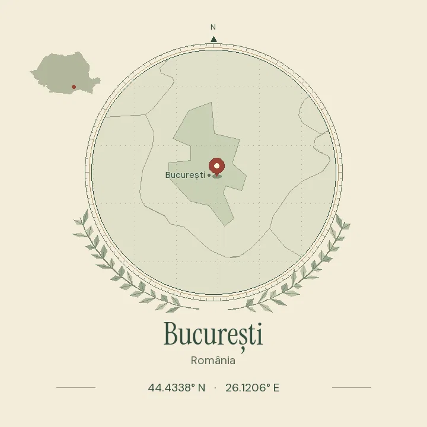
Hartă ilustrată București · Sală de nunți
Salon Traian
Un mire care a ales Salon Traian în 2022 își amintește favorabil ringul de dans și arhitectura sălii, dar atrage atenția asupra faptului că salonul era la etaj.
Strada Traian 103, 030167 București+40 741 210 221
Fotografie a locației · Sursa fotografiei București · Hostel
HOSTEL CASA POPA NAN
Hostel ieftin pe strada Popa Nan din București, cu recenzii recente despre ploșnițe, zgomot și camere fără ferestre. Ce să verifici înainte de rezervare.
Str. Popa Nan 48, 024078 București+40 727 834 812Fotografie a locației · Sursa fotografiei București · Hotel
Hello Hotels Bucuresti Gara de Nord
Hotel de două stele lângă Gara de Nord, util pentru invitații care sosesc cu trenul; 4,1 din 3.419 de evaluări. Nu e sală de nunți.
Calea Griviței 143, 010708 București+40 372 121 800
Hartă ilustrată București · Hotel
ZEUS Essence Bucharest Opera
Un avantaj practic pentru cei cazați la ZEUS Essence Bucharest Opera este că pot stabili întâlniri în centru fără un transfer lung pentru fiecare ieșire.
Strada Ion Brezoianu 37, 010132 București+40 21 312 4010
Hartă ilustrată București · Restaurant
Terasa Castel
O familie din Ploiești descrie prânzurile la Terasa Castel ca parte din ieșirile sale în parc cu un copil mic.
Unnamed Road, București
Întrebări despre locațiile din București
Unde pot dormi invitații în București?
În registrul de cazare SITUR găsim InterContinental AthéNéE Palace Bucharest by IHG (566 de locuri de cazare), Radisson Blu Hotel, Bucharest (1.256 de locuri de cazare), Palatul Suter (33 de locuri de cazare). Verifică ce camere sunt libere pentru noaptea evenimentului.
Ce spații sunt documentate pentru evenimente în aer liber în București?
Reina Events North — Recepție la cort în grădină. Events by Tonyo — Cununie civilă sau religioasă în aer liber. Reina Events — Recepție în grădina de vară.
Care locație din București are cele mai multe evaluări Google?
Radisson Blu Hotel, Bucharest are 15.999 de evaluări în profilul Google folosit la documentare. Evaluările acoperă și alte experiențe la proprietate, inclusiv vizitele fără eveniment.
Unde apare o intrare accesibilă în București?
Profilurile Google indică o intrare accesibilă la Reina Events North, Baroque Events & Garden, Events by Tonyo. Pentru o cununie în exterior, cere detalii despre traseul dintre intrare și zona cu scaune.